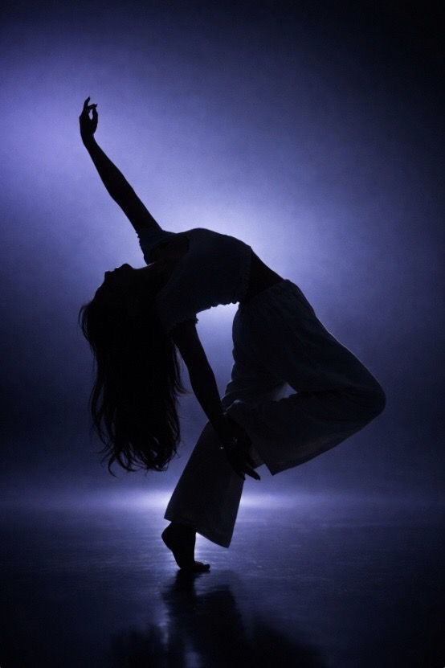

Pourquoi la danse est importante pour moi
Publié le 8 août 2026
Découvrez la place que la danse occupe dans ma vie.
Lire la suite
Sur ce blog, je partagerai mes passions,
Je pratique notamment le contemporain depuis plusieurs années
ainsi que le commercial depuis peu.
J’aime créer des desserts et découvrir de nouvelles techniques. C'est également ce qui m'a mené à faire cet apprentissage.
J’aime écouter de la musique, j'ai notamment pris des cours
de guitare étant plus jeunes.
J’aime dessiner, c’est une façon de m’exprimer et de créer.
J’aime créer des bonbons et découvrir de nouvelles techniques.
J’aime capturer des moments, revivre l'émotion à travers l’image.
Publié le 8 août 2026
Découvrez la place que la danse occupe dans ma vie.
Lire la suitePublié le 8 août 2026
Mes conseils et mes objectifs pour progresser.
Lire la suitePublié le 8 août 2026
Découvrez pourquoi j'ai choisi de parler de la danse pour mon examen de TPA.
Lire la suitePublié le 8 août 2026
Ce que j’aime dans le monde de la pâtisserie.
Lire la suitePublié le 8 août 2026
Comment j’apprends progressivement à jouer à l’oreille.
Lire la suite